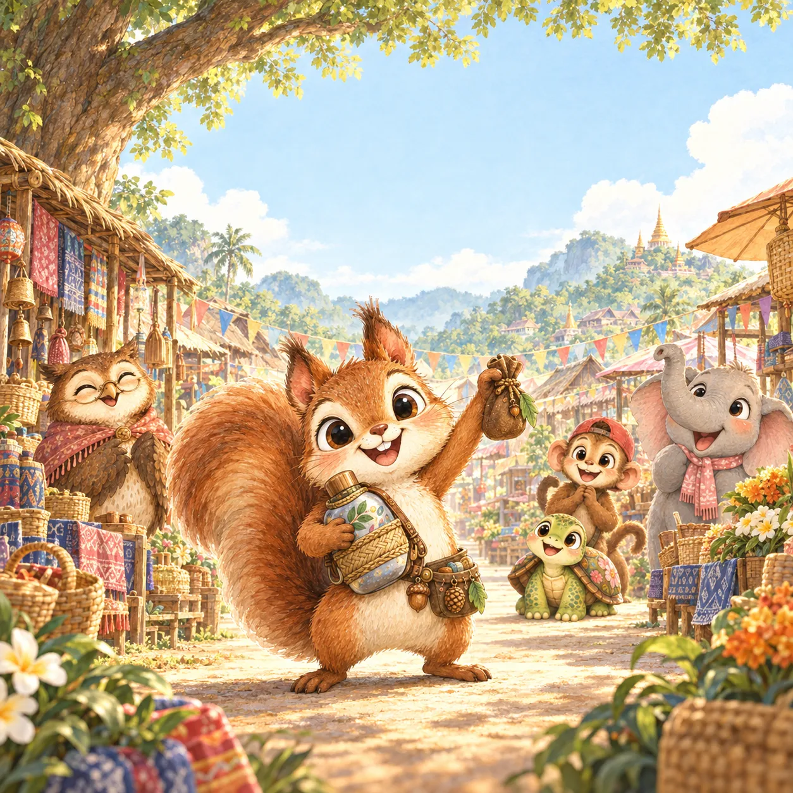
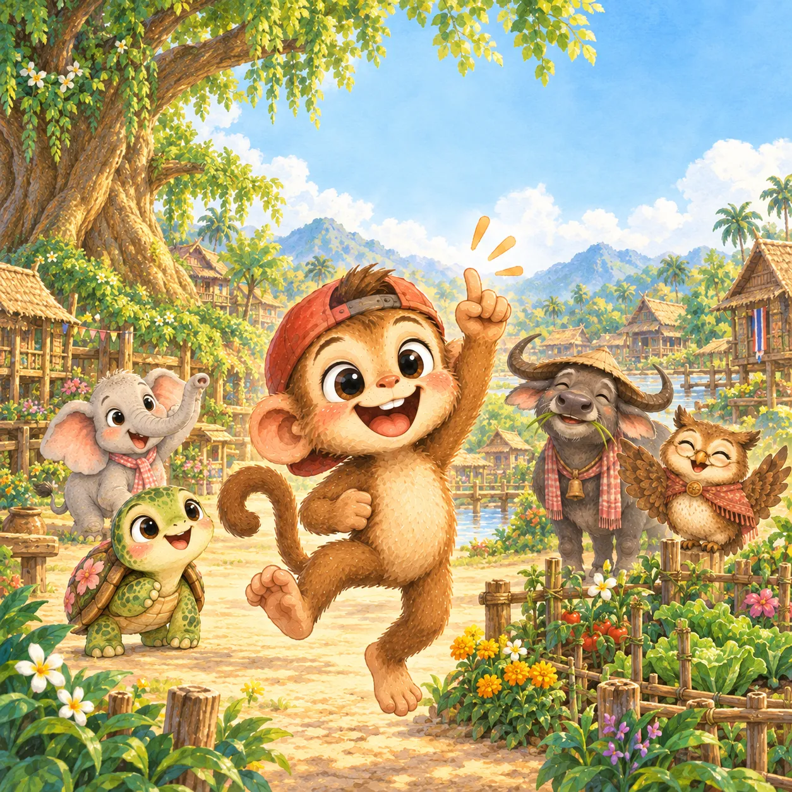
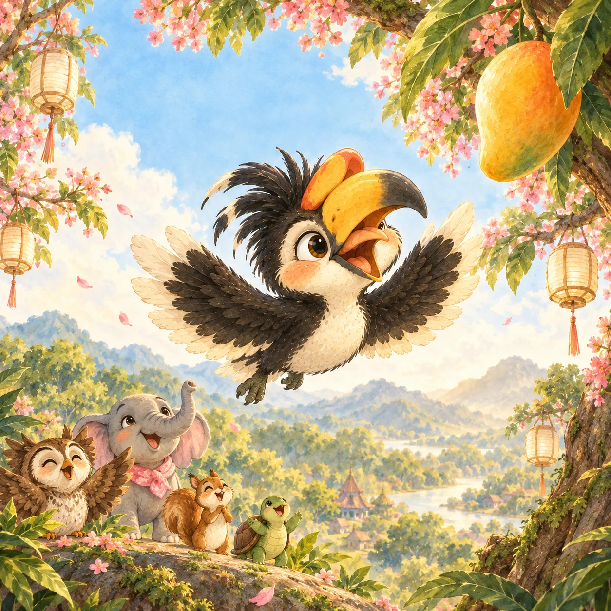
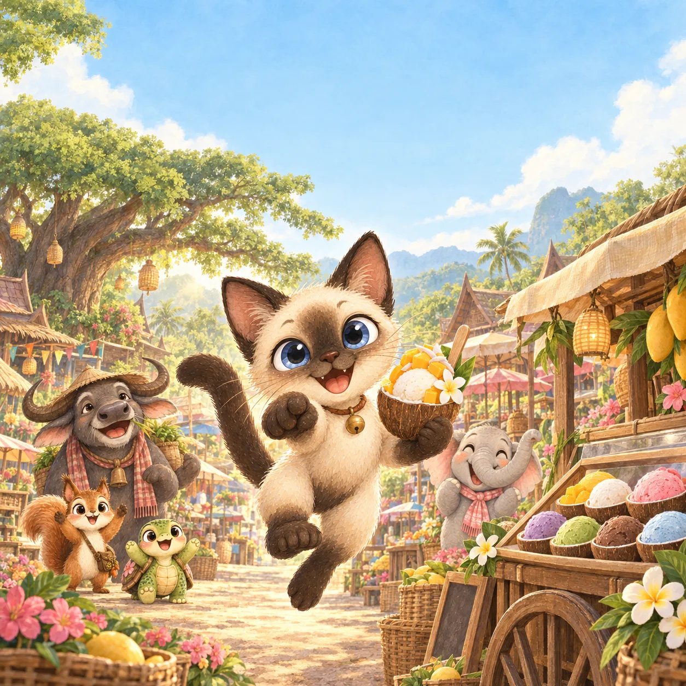

01
จี๊ด กระรอก
รู้จักพอ
ARSTINLA Stories / สำหรับเด็ก 3–6 ปี
นิทานก่อนนอนที่ชวนเด็ก ๆ รู้จักนิสัยดี ผ่านเพื่อนทั้ง 8 ตัวและเรื่องเล่าเล็ก ๆ ที่นำไปใช้ได้ในทุกวัน
ดาวน์โหลดหนังสือ EPUB ฟรี · อ่านได้บนโทรศัพท์และแท็บเล็ต
Meet the friends
ดูให้ครบก่อนฟังนิทานเต็มเรื่อง แล้วมารู้จักนิสัยดีที่เพื่อนแต่ละตัวจะมาชวนเด็ก ๆ ฝึกไปด้วยกัน

รู้จักพอ
กล้ายอมรับผิด
ภูมิใจในตัวเอง

รักษาคำพูด

ทำเองได้

กล้าตัดสินใจ
เก็บของเป็นที่
จัดการความโกรธ
Free EPUB library
หนังสือทุกเล่มเปิดให้อ่านฟรีในรูปแบบ EPUB เพิ่มเพื่อน LINE @arstinla เพื่อเข้าร่วมชุมชน รับข่าวหนังสือเล่มใหม่ และกลับมาดาวน์โหลดได้ทันที
Book 01
รู้จักพอ
เรื่องของกระรอกน้อยที่เรียนรู้ว่าความสุขไม่ได้อยู่ที่การมีมากที่สุด แต่อยู่ที่การรู้จักพอและแบ่งปัน
ไฟล์พร้อมสำหรับอ่านบนโทรศัพท์และแท็บเล็ต
Book 02
กล้ายอมรับผิด
เมื่อความผิดพลาดเกิดขึ้น ตุ้มเรียนรู้ว่าการพูดความจริงและลงมือแก้ไข คือความกล้าที่ทำให้ทุกคนกลับมายิ้มได้
ไฟล์พร้อมสำหรับอ่านบนโทรศัพท์และแท็บเล็ต
Book 03
ภูมิใจในตัวเอง
พลอยค้นพบว่าความพิเศษไม่จำเป็นต้องเหมือนใคร และทุกความพยายามเล็ก ๆ ล้วนเป็นสิ่งที่น่าภูมิใจ
ไฟล์พร้อมสำหรับอ่านบนโทรศัพท์และแท็บเล็ต
Book 04
รักษาคำพูด
คำสัญญาเล็ก ๆ ของแสนพาไปสู่บทเรียนสำคัญว่า ความไว้ใจเติบโตจากการทำสิ่งที่พูดไว้ให้สำเร็จ
ไฟล์พร้อมสำหรับอ่านบนโทรศัพท์และแท็บเล็ต
Book 05
ทำเองได้
โบกค่อย ๆ ทดลองทำสิ่งใหม่ด้วยตัวเอง และพบว่าความเก่งเริ่มต้นได้จากการลองทีละนิดโดยไม่กลัวผิด
ไฟล์พร้อมสำหรับอ่านบนโทรศัพท์และแท็บเล็ต
Book 06
กล้าตัดสินใจ
เมื่อมีหลายทางให้เลือก หมอกฝึกฟังหัวใจ คิดถึงผลที่จะตามมา และตัดสินใจด้วยความมั่นใจของตัวเอง
ไฟล์พร้อมสำหรับอ่านบนโทรศัพท์และแท็บเล็ต
Book 07
เก็บของเป็นที่
จ๋อมเปลี่ยนการเก็บของให้เป็นเกมสนุก จนค้นพบว่าบ้านที่เป็นระเบียบช่วยให้หาเจอไวและมีเวลาเล่นมากขึ้น
ไฟล์พร้อมสำหรับอ่านบนโทรศัพท์และแท็บเล็ต
Book 08
จัดการความโกรธ
หนามเรียนรู้วิธีหยุด หายใจ และบอกความรู้สึกอย่างอ่อนโยน เพื่อไม่ให้ความโกรธทำร้ายตัวเองหรือเพื่อน
ไฟล์พร้อมสำหรับอ่านบนโทรศัพท์และแท็บเล็ต
How to read EPUB
ไฟล์ EPUB อ่านได้ทั้ง Android, iPhone และ iPad หากยังไม่มีแอปอ่านหนังสือ สามารถติดตั้งฟรีจากร้านแอปทางการได้ค่ะ
Android
iPhone / iPad
เหตุผลที่เลือก EPUB: ไฟล์มีขนาดเล็กกว่าเอกสารภาพทั่วไป เปิดอ่านแบบเต็มหน้าจอได้ และรูปแบบ Fixed Layout ช่วยรักษาตำแหน่งภาพกับตัวหนังสือของนิทานให้ใกล้เคียงงานออกแบบต้นฉบับ